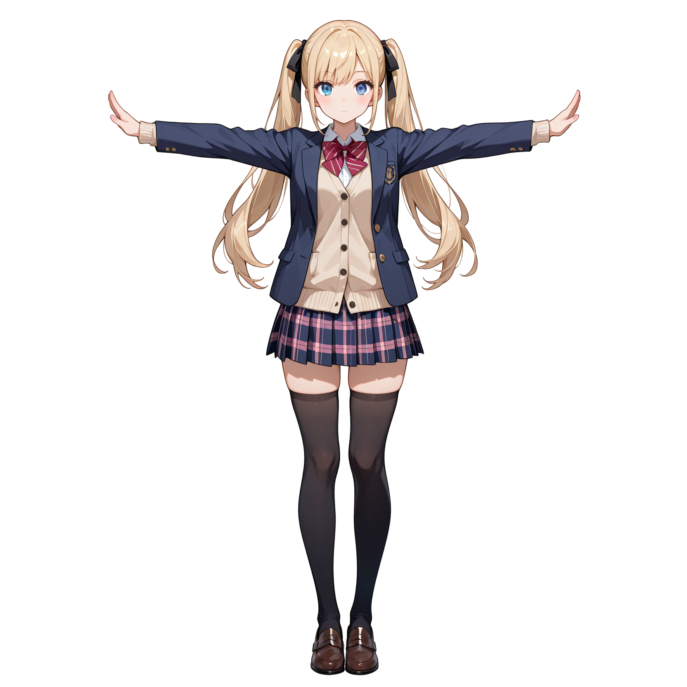
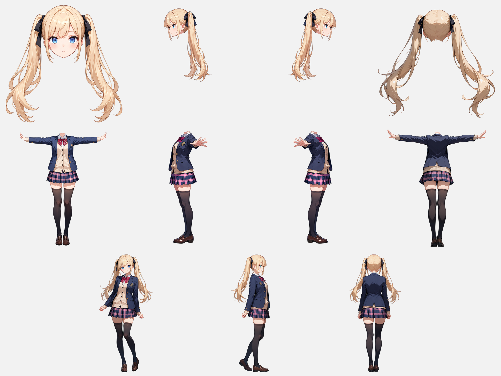

■はじめに
前回、紆余曲折の末に「きゃらくる」で作ることに決めた。 いよいよ製作開始だ。 ……と言いたいところだけど、3Dモデルを作るには、まず「素材」がいる。 今回は、その素材作りの話だよ。
■まずは道具集めから
製作開始と言っても、最初にやるのは地味な準備だ。 きゃらくる本体をダウンロードして、必要なツールを色々入れて、PCの中が一気に賑やかになった。 きゃらくるの起動は、展開したフォルダで「npm start」と打つだけ。 ……なんだけど、このコマンド、なぜか毎回忘れるんだよね。 Codexに頼んで起動のbatを作ってもらったよ
■Codexが「画像作れない！」事件
素材作りは、作業役のCodexと分担する計画だった。 絵の生成はCodexに任せて、自分は確認と判断に集中する。 完璧な計画だった。 ……はずなんだけど、始めて早々、Codexが「画像は作れません」と言い出した。
なんでだよぉ！！
Codexに聞いても何で画像作れないか分からないとか言うし。 調べてみたら、Codexの画像生成は無料プランでは使えない機能だった。
ここ、大事なことだから書いておく。 Codexの無料版は、画像生成が出来ないので注意！ 計画は開始早々に崩れた。 結局、素材の絵は自分で作ることになった。 (ただ、最終的にCodexの初月無料キャンペーンがあって、いまはPlusに加入してる)
■素材は自分で生成する
必要な素材は全部で11枚。 頭が4枚、体が4枚、それに三面図が3枚だ。 どれも正方形のPNGで、背景は透過にしないといけない。 いつもイラスト生成に使っているStable Diffusion(以下SD)のAnima→ILで、1枚ずつ生成していった。 めんどくさいけど、作ることにした。

■透過処理が地味にキツい
TポーズはSDで普通に作れるんだけど、きゃらくるでは頭と体は別にイラストを作る必要がある この分ける作業がとにかく手間なんだよね MuseにTポーズのイラストから分離をお願いしたら、上手くいかなかった ChatGPTにお願いしたら、こちらは結構うまくいったので採用 正面は上手くいったので、あとは左右と後ろ ただ、ChatGPTには1日の画像生成枚数に制限があるから沢山は作れない 最後のほうは自分でi2iで作成する羽目になった
■素材、そろった
そんなこんなで、11枚の素材が全部そろった。

あとはTripoに放り込んで3D化するだけ。 ここまで来れば、あとは楽勝……。 そう思っていた時期が俺にもありました
■最後の壁は、お金だった
いざTripoで作る段になって、分かったことがある。 Tripoの無料枠では、この製作は無理だ。 無料プランは月に200クレジットまでで、そもそも量が足りない。 作ったモデルを持ち出すエクスポートも、無料プランでは制限があって使えなかった。 なので、2026年11月15日、TripoのProプランに課金した。 Tripoも初月は安くなるキャンペーンをやってた 正直に書いておくと、「自分のイラストから3Dモデルを作る」この製作は、無料では出来ない。 有料じゃないとキツイ、というか無理だと思う。
でもそれはたまたま運が良かっただけで、通常はお金がかかる話だ。 結局、いいものを簡単に作ろうと思ったらお金はかかるｗ 時間をかけて自分でBlenderを勉強すれば出来なくもないだろうが、そんな時間はないｗ
次回はいよいよ、素材を3D化していくよ。 （つづく）